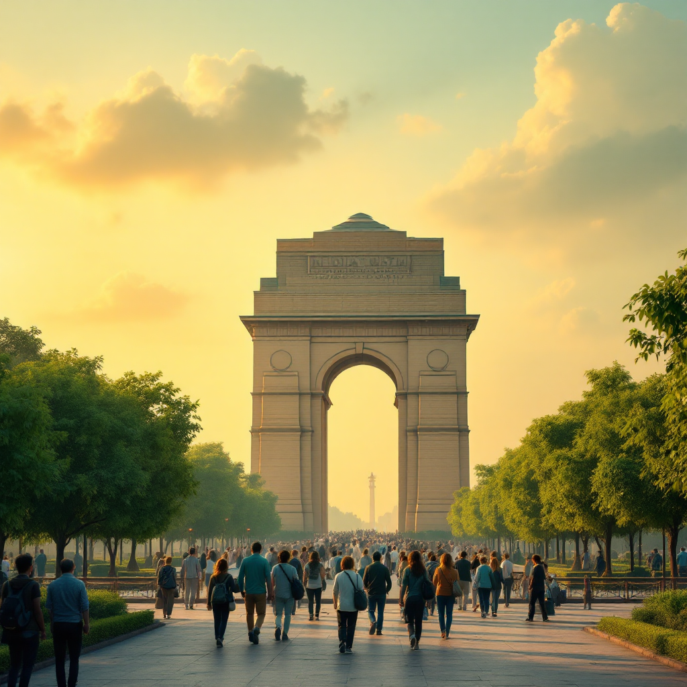
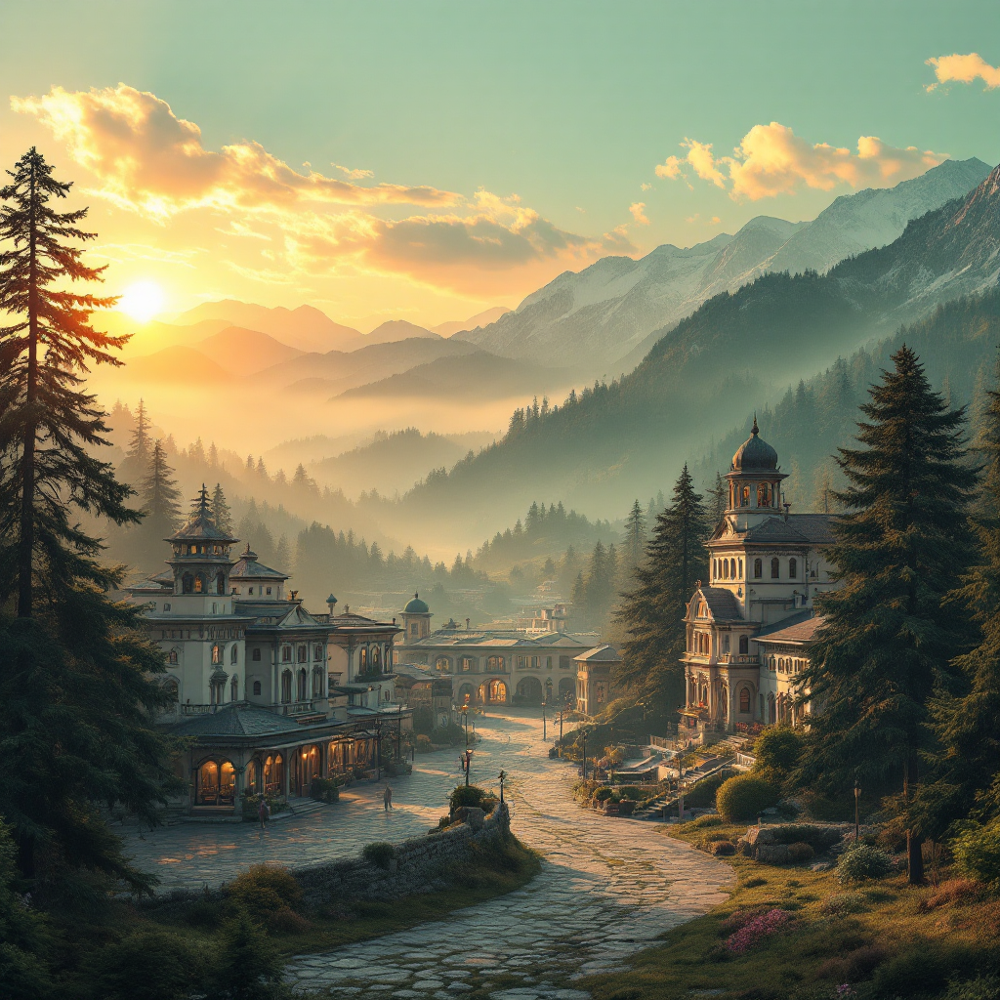
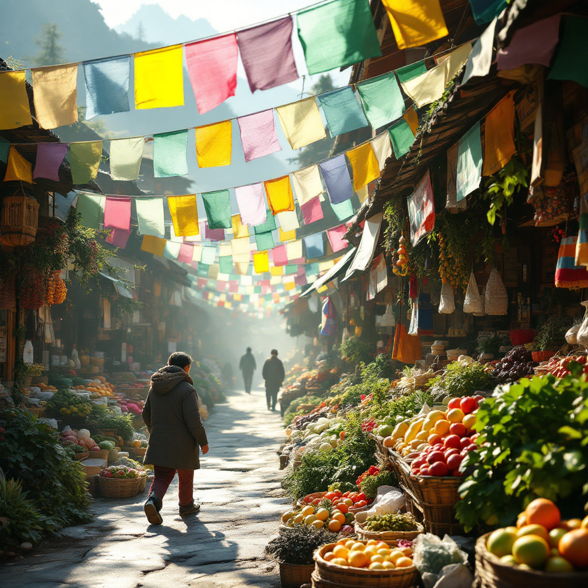

The Journey Begins
Day 1: October 19th
The sacred pilgrimage commences at Yeshvantpura Railway Station. Gather at 11:00 AM for a timely departure. The Karnataka Sampark Kranti Express awaits at 1:00 PM.
This first day marks the beginning of transformation. Let fellowship and anticipation fill your hearts.
Arrive 90 minutes early to settle in peacefully with your travel companions.
Through the Heart of India
Day 2: October 20th
A full day on the rails, traversing from South to North India. Watch landscapes transform outside your window.
Sacred Rhythms
Share stories, songs, and prayers with fellow pilgrims. Let the journey's rhythm prepare your spirit.
This day of movement mirrors our inner pilgrimage. The changing scenery reflects our spiritual transformation.
Delhi's Imperial Grandeur
Day 3: October 21st
Arrive at 8:10 AM in Delhi's Hazrat Nizamuddin station. After settling at your hotel, explore monuments that whisper ancient stories.
- India Gate: Honor fallen heroes
- Qutub Minar: Marvel at Islamic architecture
- Humayun's Tomb: Witness Mughal splendor

Each monument holds centuries of devotion and history. Walk these sacred grounds with reverence.
Golden Serenity Awaits
Day 4, October 22nd: Amritsar
- Morning Departure: Board Swarna Shatabdi Express at 7:20 AM from Delhi.
- Golden Temple: Visit Sri Harmandir Sahib at 3:00 PM. Cover your head, open your heart.
- Jallianwala Bagh: Walk through history's solemn corridors.
- Wagah Border: Witness the Beating Retreat ceremony's patriotic fervor at sunset.
Amritsar fills the soul with peace and national pride.
Ascending to Mountain Bliss
Day 5: October 23rd
Journey from Amritsar to Dalhousie begins at dawn. The 5-6 hour drive reveals the Himalayas gradually.
Arrive by afternoon to colonial charm and pine-scented air. Gandhi Chowk beckons for peaceful walks.
The Dhauladhar mountains embrace you as sunset paints the sky.

"The mountains are calling, and the soul must answer with gratitude."
Bring warm jackets. Mountain air is crisp and temperatures drop significantly.
Switzerland of India
Day 6, October 24th
- Morning in Khajjiar: Explore the "Mini Switzerland" after breakfast. Green meadows stretch endlessly.
- Journey to Pathankot: Afternoon departure brings you closer to your sacred destination.
- Evening Bus to Katra: Board at 6:00 PM. The 4-hour drive carries anticipation.
- Arrival at Base Camp: Reach Katra by 10:30 PM. Rest well for tomorrow's sacred ascent.
Paradise glimpsed, pilgrimage drawing near. Your heart prepares for divine darshan.
The Sacred Ascent
Jai Mata Di!
Day 7, October 25th
The day of ultimate devotion arrives. Your pilgrimage to Mata Vaishno Devi Bhawan unfolds.
- RFID Yatra Card: Obtain your mandatory card after breakfast. This begins your official trek.
- The 13 km Trek: Walk, hire a pony, or use a palki. The illuminated path guides you upward.
- Divine Darshan: Enter the holy cave. Feel the Mother's presence embrace your soul.
- Return Journey: Descend with blessings. The full pilgrimage takes 8-12 hours.
Pace yourself. The trek tests body and strengthens spirit. Crowds vary throughout the day.
Rest & Reflection

Day 8: October 26th
Sunday – A day for your body to rest and soul to integrate.
Relax at the hotel or explore Katra's vibrant market.
- Shop for blessed prasad
- Purchase walnuts and local crafts
- Reflect on your darshan experience
- Share stories with fellow pilgrims
This pause allows blessings to settle deeply within your heart.
Homeward with Grace
Day 9, October 27th
- Morning Departure: 8:30 AM checkout. Drive 1.5 hours to Jammu Airport carrying blessings home.
- Flight to Srinagar: 12:50 PM departure. Brief layover in Kashmir's heaven.
- Final Flight Home: 7:05 PM from Srinagar to Bengaluru.
- Return Blessed: 10:45 PM arrival. The journey ends, but transformation continues.
You return not as you left, but with the Mother's grace illuminating your path forward.